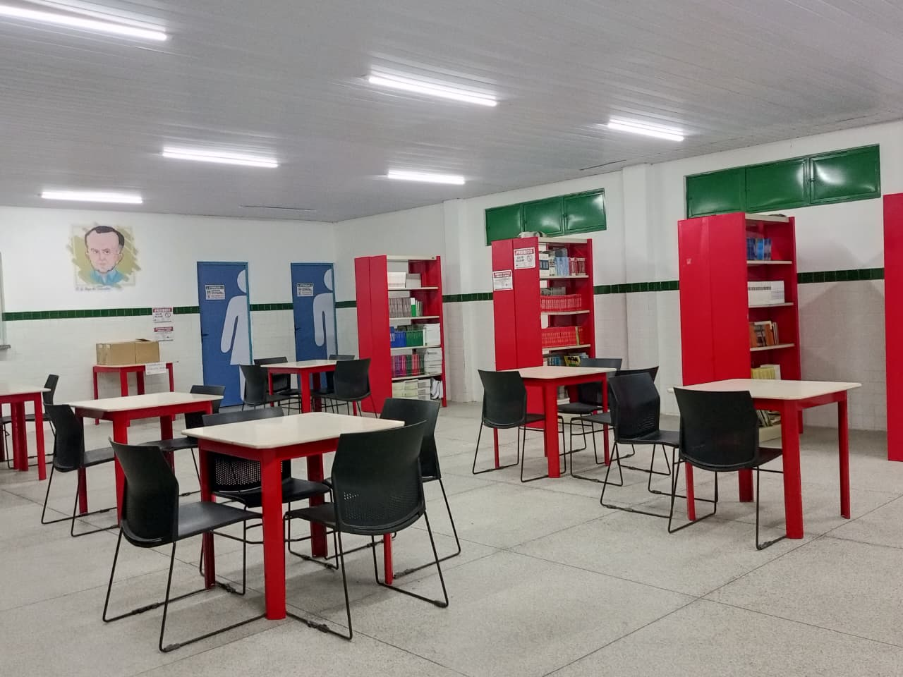
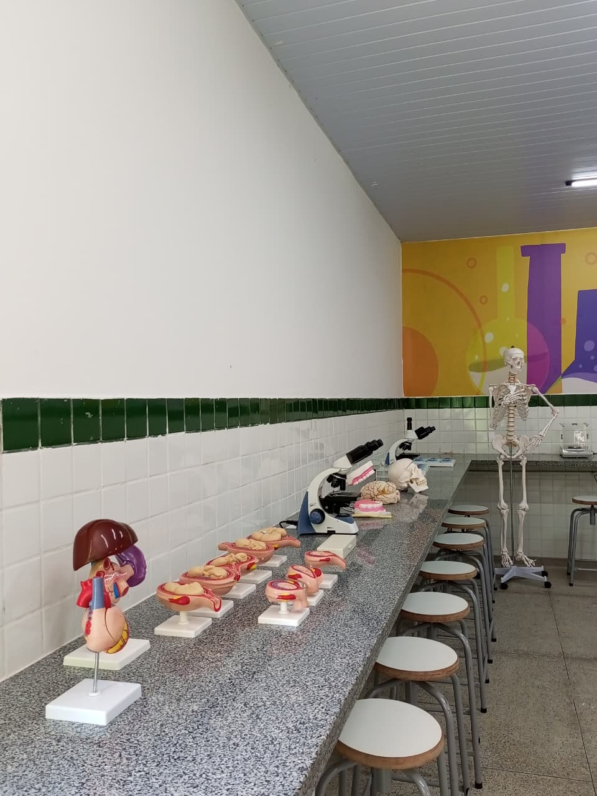
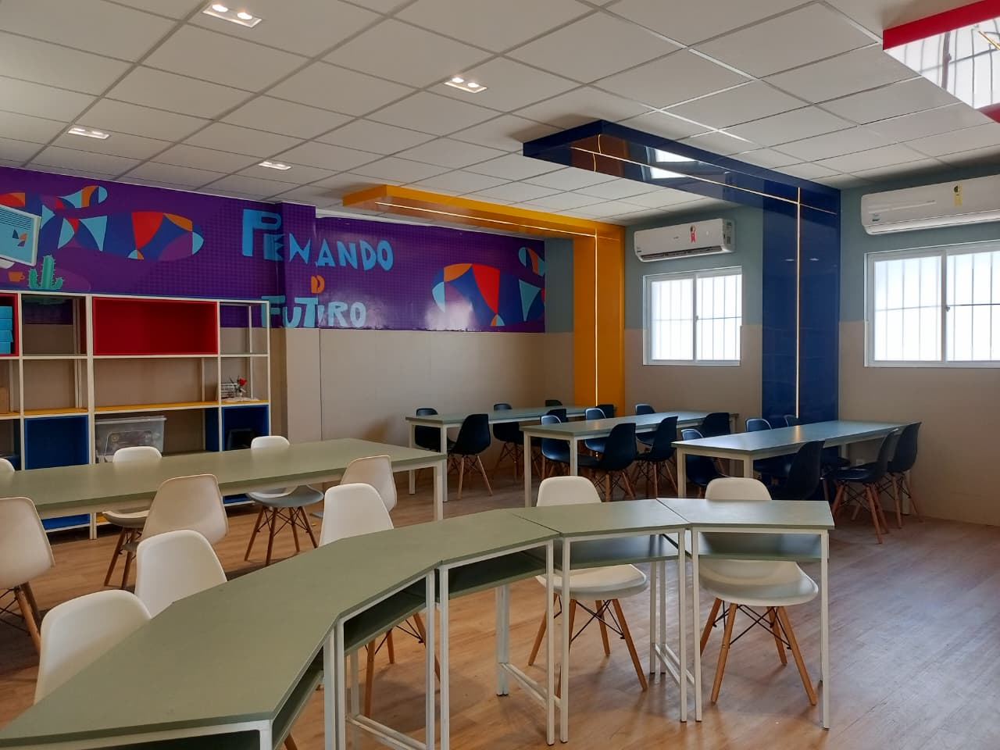
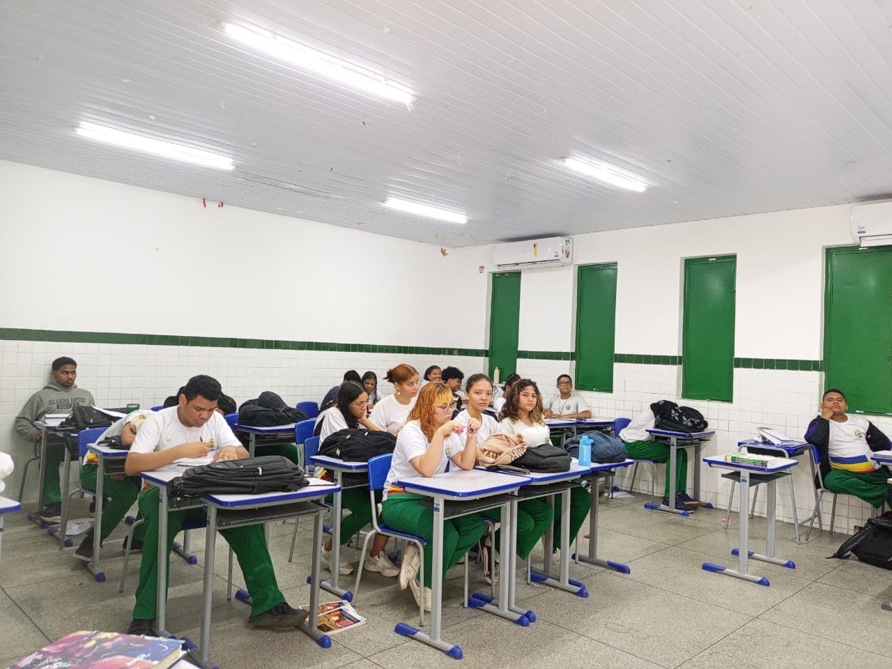
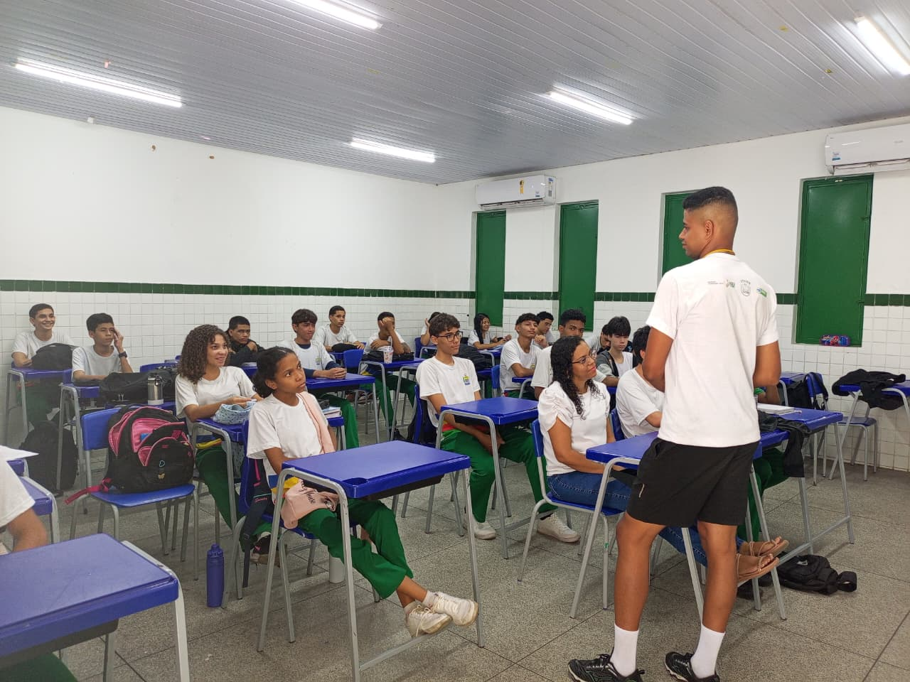

Galeria
Momentos que fazem parte da nossa história
Conheça os espaços e alguns registros do dia a dia da nossa escola: um lugar para aprender, conviver e construir um futuro melhor.


Biblioteca
Um espaço para leitura, estudo e novas descobertas.
Ampliar foto

Laboratório de ciências
Aprender com a observação e a experimentação.
Ampliar foto

Sala multimídia
Recursos que ampliam as possibilidades de aprendizagem.
Ampliar foto

Sala de aula
Conhecimento construído no encontro entre alunos e professores.
Ampliar foto
Laboratório de informática
Tecnologia e prática a serviço do aprendizado.
Ampliar foto

Aula de Desenvolvimento de Sistemas
Ideias e conhecimentos compartilhados em sala.
Ampliar fotoA educação é a ponte para um mundo de novas oportunidades.
CETI Professor Antônio Maria Madeira